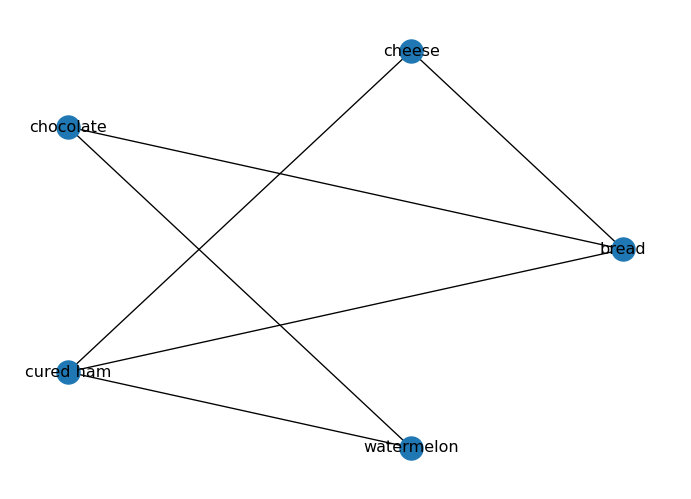
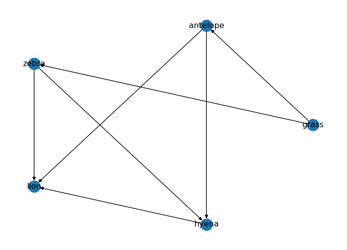
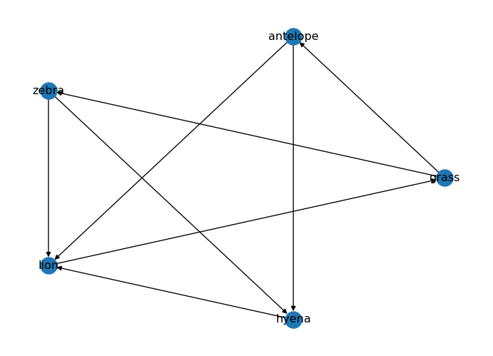

import networkx as nx
import matplotlib.pyplot as plt
# Create an undirected graph
# (foods I like to eat together)
G_foods = nx.from_edgelist([
("bread", "cheese"),
("bread", "chocolate"),
("bread", "cured ham"),
("cheese", "cured ham"),
("chocolate", "watermelon"),
("cured ham", "watermelon"),
])
# Create a directed graph
D_food_chain = nx.DiGraph() # food chain (prey -> predator)
D_food_chain.add_edges_from([
("grass", "antelope"),
("grass", "zebra"),
("antelope", "lion"),
("antelope", "hyena"),
("zebra", "lion"),
("zebra", "hyena"),
("hyena", "lion"),
])Networks: Connectivity
Paths, Degree, Connected Components
In this page, we will explore some basic properties of networks, such as degree and density.
If you are coding alongside me, I recommend you to start a new notebook and follow the code snippets below. You can also check the Network Fundamentals page for more details on how to create graphs with networkx.
As always, we should start by importing the necessary libraries and creating a sample graph.
Degree
The degree \(k\) of a node is the number of edges connected to it. In an undirected graph, the degree of a node is simply the number of neighbors it has.
# Degree of a node
print("Degree of 'bread':", G_foods.degree("bread"))Degree of 'bread': 3The average degree of an undirected graph is given by:
\[\langle k \rangle = \frac{2E}{N}\]
where \(E\) is the number of edges and \(N\) is the number of nodes.
# Average degree of the graph
ls_degrees = [G_foods.degree(node) for node in G_foods.nodes()]
avg_degree = sum(ls_degrees) / len(ls_degrees)
print("Average degree:", avg_degree)Average degree: 2.4Degrees in Directed Graphs
In a directed graph, we distinguish between in-degree (number of incoming edges) and out-degree (number of outgoing edges).
print("In-degree of 'rabbit' (number of predators):", D_food_chain.in_degree("rabbit"))
print("Out-degree of 'rabbit' (number of prey):", D_food_chain.out_degree("rabbit"))In-degree of 'rabbit' (number of predators): []
Out-degree of 'rabbit' (number of prey): []Density
A graph density is the ratio of the number of edges to the number of possible edges. It is a measure of how many edges are present in the graph compared to the maximum possible number of edges. The density of an undirected graph can be calculated as follows:
\[ D = \frac{2|E|}{|V|(|V| - 1)} \]
where \(|E|\) is the number of edges and \(|V|\) is the number of nodes in the graph.
In a directed graph, we have twice as many possible edges (since each pair of nodes can have two directed edges), so the density is calculated as:
\[ D = \frac{|E|}{|V|(|V| - 1)} \]
NetworkX provides a built-in function to calculate the density of a graph:
# Density
print("Density:", nx.density(G_foods))Density: 0.6A graph is sparse when \(D \ll 1\) and dense when \(D \approx 1\).
# Check if the graph is sparse or dense
if nx.density(G_foods) < 0.1:
print("The graph is sparse.")
else:
print("The graph is dense.")The graph is dense.Connectivity in Undirected Graphs
Connectivity is a fundamental property of graphs that describes how well the nodes are connected to each other. In an undirected graph, a graph is connected if there is a path between any two nodes. If a graph is not connected, it consists of multiple connected components, which are subgraphs in which any two nodes are connected by a path.
Paths in an Undirected Graph
A path in a network is a sequence of edges connecting two nodes.
Take a look at the food graph we created above. Is there a path from “bread” to “watermelon”?
# Draw the graph
pos = nx.circular_layout(G_foods)
nx.draw(G_foods, with_labels=True, pos=pos)
plt.show()
NetworkX provides has_path(<graph>, <node1>, <node2>) to check if there is a path between two nodes:
# Check if there is a path from 'bread' to 'watermelon'
print(
"Is there a path from 'bread' to 'watermelon'?",
nx.has_path(G_foods, "bread", "watermelon")
)Is there a path from 'bread' to 'watermelon'? TrueThere can be more than one path between two nodes. We can use all_simple_paths(<graph>, <node1>, <node2>) to find all the simple paths between two nodes:
ls_paths = list(nx.all_simple_paths(G_foods, "bread", "watermelon"))
print("All paths from 'bread' to 'watermelon':", ls_paths)All paths from 'bread' to 'watermelon': [['bread', 'cheese', 'cured ham', 'watermelon'], ['bread', 'chocolate', 'watermelon'], ['bread', 'cured ham', 'watermelon']]Connected Components in Undirected Graphs
A connected component is a subgraph in which any two nodes are connected by a path. A graph is connected if it has only one connected component.
How many connected components does
G_foods have?
G_foods has one connected component, since all nodes are connected to each other through some path.
As usual, we can verify this with NetworkX:
print("Connected components:", list(nx.connected_components(G_foods)))Connected components: [{'cured ham', 'cheese', 'chocolate', 'bread', 'watermelon'}]Diameter and Average Path Length
The diameter of a graph is the length of the longest shortest path between any two nodes in the graph. It gives us an idea of how “far apart” the nodes are in the graph.
print("Diameter:", nx.diameter(G_foods))Diameter: 2The average path length (APL) is the average of the shortest paths between all pairs of nodes.
print("Average shortest path length:", nx.average_shortest_path_length(G_foods))Average shortest path length: 1.4Connectivity in Directed Graphs
Connectivity in directed graphs is more complex than in undirected graphs, because we have to consider the direction of the edges. In a directed graph, we can have strongly connected components and weakly connected components.
Paths in Directed Graphs
In a directed graph, a path must follow the direction of the edges. For example, in the directed food chain graph D, is there a path from “grass” to “lion”?
# Draw the graph
pos = nx.circular_layout(D_food_chain)
nx.draw(D_food_chain, with_labels=True, pos=pos)
plt.show()
We can check for the existence of a path in a directed graph using the same has_path(<graph>, <node1>, <node2>) function:
print("Is there a path from 'grass' to 'lion'?", nx.has_path(D_food_chain, "grass", "lion"))
print("Is there a path from 'lion' to 'grass'?", nx.has_path(D_food_chain, "lion", "grass"))Is there a path from 'grass' to 'lion'? True
Is there a path from 'lion' to 'grass'? FalseStrongly Connected Components
A strongly connected component is a subgraph in which there is a directed path from any node to any other node. A directed graph is strongly connected if it has only one strongly connected component.
print("Is strongly connected:", nx.is_strongly_connected(D_food_chain))
print("Strongly connected components:", list(nx.strongly_connected_components(D_food_chain)))Is strongly connected: False
Strongly connected components: [{'lion'}, {'hyena'}, {'antelope'}, {'zebra'}, {'grass'}]Weakly Connected Components
A weakly connected component is a subgraph in which there is an undirected path from any node to any other node. A directed graph is weakly connected if it has only one weakly connected component.
print("Is weakly connected:", nx.is_weakly_connected(D_food_chain))
print("Weakly connected components:", list(nx.weakly_connected_components(D_food_chain)))Is weakly connected: True
Weakly connected components: [{'hyena', 'antelope', 'lion', 'grass', 'zebra'}]Exercise. How can we turn D_food_chain into a strongly connected graph? Try adding some edges to make it strongly connected.
Solution
To make D_food_chain strongly connected, we need to ensure that there is a directed path from every node to every other node. One way to achieve this is to add edges that create cycles between the nodes. Our example is a though one, as food chains are typically acyclic. Still, we can take note from “The Lion King”:
“When we die, our bodies become the grass, and the antelope eat the grass. And so, we are all connected in the great Circle of Life.” - Mufasa (lion)
# When a predator dies, it returns to the food chain as prey for the grass
D_food_chain.add_edges_from([
("lion", "grass"),
])
# Visualize the new graph
pos = nx.circular_layout(D_food_chain)
nx.draw(D_food_chain, with_labels=True, pos=pos)
plt.show()
print("Is strongly connected:", nx.is_strongly_connected(D_food_chain))
print("Strongly connected components:", list(nx.strongly_connected_components(D_food_chain)))Is strongly connected: True
Strongly connected components: [{'hyena', 'antelope', 'lion', 'grass', 'zebra'}]Diameter and Average Path Length in Directed Graphs
The diameter and average path length in directed graphs are calculated based on the shortest paths that follow the direction of the edges. If the graph is not strongly connected, we can only calculate these metrics for the largest strongly connected component.
# Get the largest strongly connected component
largest_scc = max(nx.strongly_connected_components(D_food_chain), key=len)
subgraph = D_food_chain.subgraph(largest_scc)
print("Diameter of the largest strongly connected component:", nx.diameter(subgraph))
print("Average shortest path length of the largest strongly connected component:", nx.average_shortest_path_length(subgraph))Diameter of the largest strongly connected component: 3
Average shortest path length of the largest strongly connected component: 1.85What’s Next?
In the next page, you will explore a real-world network of US air travel routes. You will analyze its connectivity and identify important nodes (airports) in the network. You will also see how the structure of the network affects the flow of information (or in this case, passengers) through it.